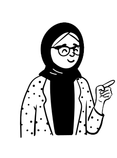
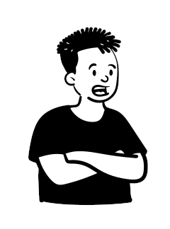
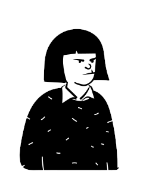
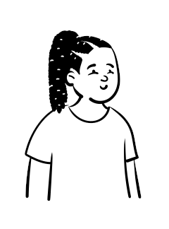
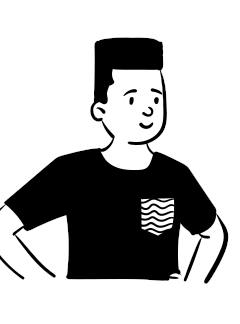

不诊断你是谁，也不承诺哪条路一定正确。
人生样本库
有什么让你纠结了很久的事？越具体越好
不工作了之后，我想去新西兰生活
→从一个真实问题开始，去看见别人已经走过的路。



产品边界
少一点标准答案
多一点走过的人
不替你做人生决定。
它只把公开经历整理成可比较的路径，让你用别人的真实代价校准自己的下一步。
每个建议都回到公开内容、来源片段和可检查证据。
固定原则：表达可以有人味，事实不能拟人化。
可见 Agent 流程
01
02
03
04
先读懂问题，再匹配公开经历。
用户问题
不工作了之后，我想去新西兰生活
正在寻找可能与你有相似经历的知友……
读取问题保留用户的具体语境，而不是抽成关键词。
识别核心变量暂停工作、现金流、身份周期、工作边界。
生成待确认问题短暂停靠、长期迁移，还是重建生活节奏？
匹配公开经历从知乎公开内容里寻找走过相似路的人。
路径卡橱窗
01

02

03


04


05


路径不是排名，是可比较的人生样本。
关于「不工作了之后，我想去新西兰生活」，TA 们是这样做的。
先去一年试生活
128 人走过先用一年确认：新西兰是答案，还是一次暂停。

留学转工签
76 人走过用读书进入就业市场，把想留下变成长期尝试。

去了又回来
61 人走过认真试过以后，发现要解决的问题不一定在远方。
技术迁移留下来
54 人走过把已有职业技能迁移到当地岗位，换稳定可能。
远程工作旅居
43 人走过带着收入换生活半径，不急着移民也不完全停工。
人物样本
 小雨 · WHV 一年
小雨 · WHV 一年
 Mia · 远程工作
Mia · 远程工作
 陈沐 · 留学转工签
陈沐 · 留学转工签
点开一条路径，看见走到这里的人。
小雨 · WHV 一年Mia · 远程工作
林川 · 技术迁移陈沐 · 留学转工签阿禾
去奥克兰 9 个月后回国
- 都在“不想继续工作”的状态下想去新西兰。
- 都不确定这是长期迁移，还是一次暂停。
- 都需要面对身份、收入和下一步职业路径。
2022.05前往新西兰
2022.12发现身份和收入压力超预期
2023.02回国，在成都重新开始
公开内容与证据
source公开知乎内容，不使用 OAuth 资料当证据。
evidence卡片、匹配理由和回答都绑定来源片段。
guard证据不足时，入口降级而不是补写剧情。
每一次总结，都要回到来源。
我去了新西兰 9 个月，最后还是回来了
到了新西兰才知道，离开只会把问题挪到一个更安静的地方。真正站到前面的，是收入、身份、语言、租房和下一步职业。
AI 只负责整理和表达，不负责编造作者经历。
经验分身
证据足够时，可以继续追问这段公开经历。
继续理解这段路
刚到新西兰前三个月，最大的现实落差是什么？
从公开分享看，落差主要不在风景，而在身份、收入和“我现在是谁”的空白感。
如果重新来一次？
出发前先确认什么？
哪些信号说明该回流？
人生样本库
看见别人走过的路，再决定自己的下一步。
输入一个真实困惑，得到路径、人物、来源和可追问的经验回声。